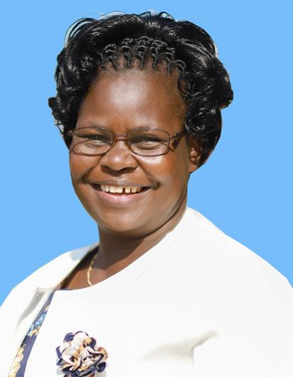

<!DOCTYPE html>
<html style="font-size: 16px;" lang="en"><head>
    <meta name="viewport" content="width=device-width, initial-scale=1.0">
    <meta charset="utf-8">
    <meta name="keywords" content="Resea​rch Videos, recently&nbsp; added">
    <meta name="description" content="">
    <title>iscar</title>
    <link rel="stylesheet" href="nicepage.css" media="screen">
<link rel="stylesheet" href="iscar.css" media="screen">
    <script class="u-script" type="text/javascript" src="jquery.js" "="" defer=""></script>
    <script class="u-script" type="text/javascript" src="nicepage.js" "="" defer=""></script>
    <meta name="generator" content="Nicepage 4.15.8, nicepage.com">
    <link id="u-theme-google-font" rel="stylesheet" href="https://fonts.googleapis.com/css?family=Roboto:100,100i,300,300i,400,400i,500,500i,700,700i,900,900i|Open+Sans:300,300i,400,400i,500,500i,600,600i,700,700i,800,800i">
    <link id="u-page-google-font" rel="stylesheet" href="https://fonts.googleapis.com/css?family=Merriweather:300,300i,400,400i,700,700i,900,900i">
    
    
    
    
    
    
    
    
    
    
    <script type="application/ld+json">{
		"@context": "http://schema.org",
		"@type": "Organization",
		"name": ""
}</script>
    <meta name="theme-color" content="#478ac9">
    <meta property="og:title" content="iscar">
    <meta property="og:type" content="website">
  </head>
  <body class="u-body u-xl-mode" data-lang="en"><header class="u-clearfix u-header u-palette-3-light-3 u-sticky u-sticky-17af u-header" id="sec-59f7"><div class="u-clearfix u-sheet u-valign-middle u-sheet-1">
        <nav class="u-menu u-menu-one-level u-offcanvas u-menu-1">
          <div class="menu-collapse" style="font-size: 1rem; letter-spacing: 0px; font-weight: 700;">
            <a class="u-button-style u-custom-border u-custom-border-color u-custom-borders u-custom-left-right-menu-spacing u-custom-padding-bottom u-custom-text-color u-custom-top-bottom-menu-spacing u-nav-link u-text-active-palette-1-base u-text-hover-palette-2-base" href="#">
              <svg class="u-svg-link" viewBox="0 0 24 24"><use xmlns:xlink="http://www.w3.org/1999/xlink" xlink:href="#menu-hamburger"></use></svg>
              <svg class="u-svg-content" version="1.1" id="menu-hamburger" viewBox="0 0 16 16" x="0px" y="0px" xmlns:xlink="http://www.w3.org/1999/xlink" xmlns="http://www.w3.org/2000/svg"><g><rect y="1" width="16" height="2"></rect><rect y="7" width="16" height="2"></rect><rect y="13" width="16" height="2"></rect>
</g></svg>
            </a>
          </div>
          <div class="u-custom-menu u-nav-container">
            <ul class="u-align-center u-nav u-popupmenu-items u-text-palette-2-light-1 u-unstyled u-nav-2"><li class="u-nav-item"><a class="u-button-style u-nav-link" href="Home.html">Home</a>
            </li><li class="u-nav-item"><a class="u-button-style u-nav-link" href="About.html">About</a>
            </li><li class="u-nav-item"><a class="u-button-style u-nav-link" href="About-Us.html">The Team</a>
            </li><li class="u-nav-item"><a class="u-button-style u-nav-link" href="Collaborators.html">Collaborators</a>
            </li><li class="u-nav-item"><a class="u-button-style u-nav-link" href="Contact.html">Contact</a>
            </li></ul>
          </div>
          <div class="u-custom-menu u-nav-container-collapse">
            <div class="u-black u-container-style u-inner-container-layout u-opacity u-opacity-95 u-sidenav">
              <div class="u-inner-container-layout u-sidenav-overflow">
                <div class="u-menu-close"></div>
                <ul class="u-align-center u-nav u-popupmenu-items u-text-palette-2-light-1 u-unstyled u-nav-2"><li class="u-nav-item"><a class="u-button-style u-nav-link" href="Home.html">Home</a>
                </li><li class="u-nav-item"><a class="u-button-style u-nav-link" href="About.html">About</a>
                </li><li class="u-nav-item"><a class="u-button-style u-nav-link" href="About-Us.html">The Team</a>
                </li><li class="u-nav-item"><a class="u-button-style u-nav-link" href="Collaborators.html">Collaborators</a>
                </li><li class="u-nav-item"><a class="u-button-style u-nav-link" href="Contact.html">Contact</a>
                </li></ul>
              </div>
            </div>
            <div class="u-black u-menu-overlay u-opacity u-opacity-70"></div>
          </div>
        </nav>
        
      </div><style class="u-sticky-style" data-style-id="17af">.u-sticky-fixed.u-sticky-17af, .u-body.u-sticky-fixed .u-sticky-17af {
box-shadow: 5px 5px 20px 0 rgba(0,0,0,0.4) !important
}</style></header>
    <section class="u-clearfix u-section-1" id="sec-2d6f">
      <div class="u-clearfix u-sheet u-valign-top-md u-valign-top-sm u-valign-top-xs u-sheet-1">
        
        <p class="u-align-center u-text u-text-1">
          <span style="font-size: 1.25rem;"><b><u>CURRICULUM VITAE</u></b>
          </span>
          <br>
          <span style="font-weight: 700;"> DR. ISCAR A. OLUOCH (PHD)</span>
          <br>Address: P.O. BOX ​550-40405
​SARE-AWENDO
MIGORI COUNTY-KENYA&nbsp;<br>Telephone: +254 – ​713 003 011
&nbsp;<br>Email: -iscaroluoch@yahoo.com or iscaroluoch@gmail.com&nbsp;<br>Marital status: Married.&nbsp;<br>Gender: Female&nbsp;<br>Nationality: Kenyan&nbsp;<br>Religion: Christian&nbsp;<br>Language fluency: English, Kiswahili and Dholuo
        </p>
      </div>
    </section>
    <section class="u-clearfix u-section-2" id="sec-37e9">
      <div class="u-clearfix u-sheet u-sheet-1">
        <h4 class="u-text u-text-body-color u-text-default u-text-1"> Educational background</h4>
        <div class="u-expanded-width u-table u-table-responsive u-table-1">
          <table class="u-table-entity">
            <colgroup>
              <col width="7.6%">
              <col width="42%">
              <col width="14.1%">
              <col width="36.3%">
            </colgroup>
            <tbody class="u-table-body">
              <tr style="height: 54px;">
                <td class="u-border-1 u-border-grey-dark-1 u-table-cell">No.</td>
                <td class="u-border-1 u-border-grey-dark-1 u-table-cell">Name of Institution</td>
                <td class="u-border-1 u-border-grey-dark-1 u-table-cell">Dates</td>
                <td class="u-border-1 u-border-grey-dark-1 u-table-cell">Degree Attained</td>
              </tr>
              <tr style="height: 54px;">
                <td class="u-border-1 u-border-grey-dark-1 u-table-cell">1</td>
                <td class="u-border-1 u-border-grey-dark-1 u-table-cell">Great Lakes University of Kisumu</td>
                <td class="u-border-1 u-border-grey-dark-1 u-table-cell">2013-2016</td>
                <td class="u-border-1 u-border-grey-dark-1 u-table-cell">PhD in Community Health and 
Development</td>
              </tr>
              <tr style="height: 54px;">
                <td class="u-border-1 u-border-grey-dark-1 u-table-cell">2</td>
                <td class="u-border-1 u-border-grey-dark-1 u-table-cell">KCA University</td>
                <td class="u-border-1 u-border-grey-dark-1 u-table-cell">2016</td>
                <td class="u-border-1 u-border-grey-dark-1 u-table-cell">Certificate in Entrepreneurship, 
Innovations Management and 
Leadership</td>
              </tr>
              <tr style="height: 54px;">
                <td class="u-border-1 u-border-grey-dark-1 u-table-cell">3</td>
                <td class="u-border-1 u-border-grey-dark-1 u-table-cell">Strathmore University</td>
                <td class="u-border-1 u-border-grey-dark-1 u-table-cell">2013-2014</td>
                <td class="u-border-1 u-border-grey-dark-1 u-table-cell">Diploma in Managing High 
Performing Organizations</td>
              </tr>
              <tr style="height: 54px;">
                <td class="u-border-1 u-border-grey-dark-1 u-table-cell">4</td>
                <td class="u-border-1 u-border-grey-dark-1 u-table-cell">Great Lakes University of Kisumu</td>
                <td class="u-border-1 u-border-grey-dark-1 u-table-cell">2005- 2008</td>
                <td class="u-border-1 u-border-grey-dark-1 u-table-cell">Masters in Community Health and 
Development</td>
              </tr>
              <tr style="height: 54px;">
                <td class="u-border-1 u-border-grey-dark-1 u-table-cell">5</td>
                <td class="u-border-1 u-border-grey-dark-1 u-table-cell">Kenya Institute of Psychological 
Counseling</td>
                <td class="u-border-1 u-border-grey-dark-1 u-table-cell">2002- 2004</td>
                <td class="u-border-1 u-border-grey-dark-1 u-table-cell">Higher Diploma in Psychological 
Counseling</td>
              </tr>
              <tr style="height: 54px;">
                <td class="u-border-1 u-border-grey-dark-1 u-table-cell">6</td>
                <td class="u-border-1 u-border-grey-dark-1 u-table-cell">Kenyatta University</td>
                <td class="u-border-1 u-border-grey-dark-1 u-table-cell">1989- 1992&nbsp;</td>
                <td class="u-border-1 u-border-grey-dark-1 u-table-cell">Bachelors of Arts( Sociology)</td>
              </tr>
              <tr style="height: 54px;">
                <td class="u-border-1 u-border-grey-dark-1 u-table-cell">7</td>
                <td class="u-border-1 u-border-grey-dark-1 u-table-cell">Asumbi Girls High school</td>
                <td class="u-border-1 u-border-grey-dark-1 u-table-cell">1987-1988</td>
                <td class="u-border-1 u-border-grey-dark-1 u-table-cell">Kenya Advanced Level Education 
(‘A’ Level)</td>
              </tr>
              <tr style="height: 54px;">
                <td class="u-border-1 u-border-grey-dark-1 u-table-cell">8</td>
                <td class="u-border-1 u-border-grey-dark-1 u-table-cell">Ogande Girls High school</td>
                <td class="u-border-1 u-border-grey-dark-1 u-table-cell">1983-1986</td>
                <td class="u-border-1 u-border-grey-dark-1 u-table-cell">Kenya Secondary Education (‘O’ 
Level)&nbsp;</td>
              </tr>
              <tr style="height: 54px;">
                <td class="u-border-1 u-border-grey-dark-1 u-table-cell">9</td>
                <td class="u-border-1 u-border-grey-dark-1 u-table-cell">Rabuor Kogelo primary School</td>
                <td class="u-border-1 u-border-grey-dark-1 u-table-cell">1976- 1982</td>
                <td class="u-border-1 u-border-grey-dark-1 u-table-cell">Certificate of Primary Education 
( CPE)&nbsp;</td>
              </tr>
            </tbody>
          </table>
        </div>
      </div>
    </section>
    <section class="u-clearfix u-section-3" id="sec-a93c">
      <div class="u-clearfix u-sheet u-sheet-1">
        <h4 class="u-text u-text-body-color u-text-default u-text-1"> PROFFESSIONAL TRAININGS</h4>
        <div class="u-expanded-width u-table u-table-responsive u-table-1">
          <table class="u-table-entity">
            <colgroup>
              <col width="7.5%">
              <col width="42.5%">
              <col width="36.8%">
              <col width="13.2%">
            </colgroup>
            <tbody class="u-table-body">
              <tr style="height: 46px;">
                <td class="u-border-1 u-border-grey-dark-1 u-table-cell">No</td>
                <td class="u-border-1 u-border-grey-dark-1 u-table-cell">Institution</td>
                <td class="u-border-1 u-border-grey-dark-1 u-table-cell">Trainings/Courses</td>
                <td class="u-border-1 u-border-grey-dark-1 u-table-cell">Date</td>
              </tr>
              <tr style="height: 46px;">
                <td class="u-border-1 u-border-grey-dark-1 u-table-cell">1</td>
                <td class="u-border-1 u-border-grey-dark-1 u-table-cell">Kenya School of Government 
(KSG)</td>
                <td class="u-border-1 u-border-grey-dark-1 u-table-cell">Strategic Leadership Development program ( 
SLDP)</td>
                <td class="u-border-1 u-border-grey-dark-1 u-table-cell">2021</td>
              </tr>
              <tr style="height: 46px;">
                <td class="u-border-1 u-border-grey-dark-1 u-table-cell">2</td>
                <td class="u-border-1 u-border-grey-dark-1 u-table-cell">Kenya School of 
Government( KSG)</td>
                <td class="u-border-1 u-border-grey-dark-1 u-table-cell">Management Communication skills for Health</td>
                <td class="u-border-1 u-border-grey-dark-1 u-table-cell">2019</td>
              </tr>
              <tr style="height: 46px;">
                <td class="u-border-1 u-border-grey-dark-1 u-table-cell">3</td>
                <td class="u-border-1 u-border-grey-dark-1 u-table-cell">Kenya School of 
Government( KSG)</td>
                <td class="u-border-1 u-border-grey-dark-1 u-table-cell">Policy and Legislation Drafting</td>
                <td class="u-border-1 u-border-grey-dark-1 u-table-cell">2014&nbsp;</td>
              </tr>
              <tr style="height: 46px;">
                <td class="u-border-1 u-border-grey-dark-1 u-table-cell">4</td>
                <td class="u-border-1 u-border-grey-dark-1 u-table-cell">International Child Support</td>
                <td class="u-border-1 u-border-grey-dark-1 u-table-cell">Early Detection, Prevention and Mitigation of Child 
Abuse</td>
                <td class="u-border-1 u-border-grey-dark-1 u-table-cell">2010</td>
              </tr>
              <tr style="height: 46px;">
                <td class="u-border-1 u-border-grey-dark-1 u-table-cell">5</td>
                <td class="u-border-1 u-border-grey-dark-1 u-table-cell">National Campaign against 
Alcohol and Drug Abuse</td>
                <td class="u-border-1 u-border-grey-dark-1 u-table-cell">Trainer of Trainees (TOT) in Drug and Substance 
Abuse</td>
                <td class="u-border-1 u-border-grey-dark-1 u-table-cell">2009</td>
              </tr>
              <tr style="height: 46px;">
                <td class="u-border-1 u-border-grey-dark-1 u-table-cell">6</td>
                <td class="u-border-1 u-border-grey-dark-1 u-table-cell">Center for Disease Control 
and Prevention (CDC)&nbsp;</td>
                <td class="u-border-1 u-border-grey-dark-1 u-table-cell">Introduction to Grants Management for Global 
AIDS Programme</td>
                <td class="u-border-1 u-border-grey-dark-1 u-table-cell">2007</td>
              </tr>
              <tr style="height: 46px;">
                <td class="u-border-1 u-border-grey-dark-1 u-table-cell">7</td>
                <td class="u-border-1 u-border-grey-dark-1 u-table-cell">National AIDS Control 
Programme and Division of 
Reproductive Health (MOH)</td>
                <td class="u-border-1 u-border-grey-dark-1 u-table-cell">Trainer of trainees on Prevention of Mother to child 
Transmission of HIV/AIDS to Service Providers</td>
                <td class="u-border-1 u-border-grey-dark-1 u-table-cell">2007</td>
              </tr>
              <tr style="height: 46px;">
                <td class="u-border-1 u-border-grey-dark-1 u-table-cell">8</td>
                <td class="u-border-1 u-border-grey-dark-1 u-table-cell">CARE international in Kenya 
in collaboration with CARE 
Zimbabwe</td>
                <td class="u-border-1 u-border-grey-dark-1 u-table-cell">Livelihoods Frameworks and 
Entrepreneurships:
Selection, Planning and Management (SPM) of 
Income Generating Activities (IGA),</td>
                <td class="u-border-1 u-border-grey-dark-1 u-table-cell">2005&nbsp;</td>
              </tr>
              <tr style="height: 46px;">
                <td class="u-border-1 u-border-grey-dark-1 u-table-cell">9</td>
                <td class="u-border-1 u-border-grey-dark-1 u-table-cell">CARE international in Kenya 
in collaboration with CARE 
Zimbabwe</td>
                <td class="u-border-1 u-border-grey-dark-1 u-table-cell">TOT on Voluntary Savings and Loaning (VS&amp;L) 
Methodology designed to enable the poor to 
mobilize capital for enterprise development</td>
                <td class="u-border-1 u-border-grey-dark-1 u-table-cell">2005</td>
              </tr>
              <tr style="height: 46px;">
                <td class="u-border-1 u-border-grey-dark-1 u-table-cell">10</td>
                <td class="u-border-1 u-border-grey-dark-1 u-table-cell">CDC- Atlanta<br>
                </td>
                <td class="u-border-1 u-border-grey-dark-1 u-table-cell">HIV/AIDS Programming
- Stigma and Discrimination Reduction Advocacy 
course. Stepping Stones: A training Package on 
HIV/AIDS Communication &amp; Relationship skills.&nbsp;</td>
                <td class="u-border-1 u-border-grey-dark-1 u-table-cell"></td>
              </tr>
              <tr style="height: 46px;">
                <td class="u-border-1 u-border-grey-dark-1 u-table-cell"></td>
                <td class="u-border-1 u-border-grey-dark-1 u-table-cell">CARE Kenya</td>
                <td class="u-border-1 u-border-grey-dark-1 u-table-cell">Prevention of Mother to Child Transmission of 
HIV/AIDS ( PMTCT)&nbsp;</td>
                <td class="u-border-1 u-border-grey-dark-1 u-table-cell">2005</td>
              </tr>
              <tr style="height: 46px;">
                <td class="u-border-1 u-border-grey-dark-1 u-table-cell"></td>
                <td class="u-border-1 u-border-grey-dark-1 u-table-cell">CDC-Atlanta</td>
                <td class="u-border-1 u-border-grey-dark-1 u-table-cell">-Safe Water Systems &amp; Hand Hygiene training-
/CARE/ K</td>
                <td class="u-border-1 u-border-grey-dark-1 u-table-cell"></td>
              </tr>
              <tr style="height: 46px;">
                <td class="u-border-1 u-border-grey-dark-1 u-table-cell"></td>
                <td class="u-border-1 u-border-grey-dark-1 u-table-cell"></td>
                <td class="u-border-1 u-border-grey-dark-1 u-table-cell">-Participatory Monitoring and Evaluation</td>
                <td class="u-border-1 u-border-grey-dark-1 u-table-cell"></td>
              </tr>
              <tr style="height: 46px;">
                <td class="u-border-1 u-border-grey-dark-1 u-table-cell"></td>
                <td class="u-border-1 u-border-grey-dark-1 u-table-cell">USAID&nbsp;</td>
                <td class="u-border-1 u-border-grey-dark-1 u-table-cell">- Organizational Capacity Development</td>
                <td class="u-border-1 u-border-grey-dark-1 u-table-cell"></td>
              </tr>
              <tr style="height: 46px;">
                <td class="u-border-1 u-border-grey-dark-1 u-table-cell">11</td>
                <td class="u-border-1 u-border-grey-dark-1 u-table-cell">Tropical Institute of 
community Health&nbsp;</td>
                <td class="u-border-1 u-border-grey-dark-1 u-table-cell">-Nutritional management for the people living with 
HIV/AIDS by TICH in Africa.<br>-Management of orphans and vulnerable children&nbsp;<br>-Food security and Entrepreneurship for the rural 
poor communities<br>
                </td>
                <td class="u-border-1 u-border-grey-dark-1 u-table-cell">2004&nbsp;</td>
              </tr>
            </tbody>
          </table>
        </div>
      </div>
    </section>
    <section class="u-clearfix u-section-4" id="sec-b718">
      <div class="u-clearfix u-sheet u-valign-middle u-sheet-1">
        <h4 class="u-text u-text-body-color u-text-default u-text-1"> Employment history</h4>
        <p class="u-text u-text-default u-text-2">
          <span style="font-weight: 700;"> 1. MIGORI COUNTY GOVERNMENT 2013 – 2022&nbsp;</span>
          <br>✓ County Executive Committee Member- Public Service Management &amp; 
Administration 2021- 2022&nbsp;<br>✓ County Executive Committee Member – Health Services 2018 – 2020&nbsp;<br>✓ County Executive Committee Member – Agriculture, Livestock &amp; Livestock 
Production 2015 – 2017&nbsp;<br>✓ County Executive Committee Member – Water &amp; Sanitation 2015 – 2017
✓ County Executive Committee Member – Health Services 2013 – 2014<br>
          <br>
          <br>• <span style="font-weight: 700;">Key Responsibilities:</span>
          <br>✓ Ensure the implementation, within the county, national legislation and policies to the 
extent that the legislation so requires,&nbsp;<br>✓ Ensure the implementation, within the county, national legislation and policies to the 
extent that the legislation so requires,&nbsp;<br>✓ Manage and coordinate the functions of the county administration and its departments,&nbsp;<br>✓ Preparation of proposed policies, strategies and action plans for legislation by the 
county assembly,&nbsp;<br>✓ Ensuring that the county departments align their roles and responsibilities with the 
priorities and objectives set out in the county’s policies and plans&nbsp;<br>✓ Designing a performance management plan to evaluate the performance of the 
county’s public service and the implementation of county policies<br>
          <br>
          <span style="font-weight: 700;">Budget &amp; Leadership Scope</span>: KES 2.2Billion annually, 25 direct &amp; over 1000 indirect staff 
(Health Department) | KES 550M annually, 12 direct &amp; 107 indirect staff (Department of 
Agriculture, Livestock &amp; Fisheries) | KES 750M annually &amp; 237 staff (Department of Water 
&amp; Sanitation) annual budgets<br>
          <br>Key Contributions &amp; Results:&nbsp;<br>✓ Formulated various policies, bills, and Action plans for legislation by the County 
Assembly. These included but not limited to;&nbsp;<br>− The Migori County Health Strategic Plan 2013-2018
− Migori County Monitoring and Evaluation Framework 2014-2020&nbsp;<br>− County Multi- sectoral Youth and Adolescence Action plan 2014- 2020&nbsp;<br>− Migori County Community Health Services Bill 2018-2023
− Migori County Agriculture and Livestock Strategic Plan 2015-2020
− Migori County Water and Sanitation Action Plan 2016-2022
− The County Nutrition Strategic Plan 2018-2023
− Farm Input Subsidy Programme 2016-2021
Increased funding portfolio through sustained partnerships with international community 
and bilateral donor. Excellent track record in resource mobilization in place .&nbsp;<br>
        </p>
      </div>
    </section>
    <section class="u-clearfix u-section-5" id="sec-f28c">
      <div class="u-clearfix u-sheet u-valign-middle u-sheet-1">
        <p class="u-text u-text-default u-text-1">
          <span style="font-weight: 700;">2. NATIONAL CAMPAIGN AGAINST ALCOHOL AND DRUG ABUSE ( NACADA)&nbsp;</span>
          <br> Regional Programmes Coordinator 2008-2012&nbsp;<br>Semi-autonomous State Corporation established to undertake public education and 
awareness campaign against drug abuse, especially among youth in schools and other 
institutions of higher learning.&nbsp;<br>Provided strategic and technical leadership in the planning, management, implementation, 
and monitoring of countrywide programs on control of alcohol and drug abuse in Kenya, 
with a focus on public education and awareness, advocacy, counseling and treatment for 
people suffering from drug addiction.&nbsp;<br>
          <span style="font-weight: 700;">Key Responsibilities;&nbsp;</span>
          <br>✓ Provide leadership, coordination and technical backstopping in all programming areas for 
effectiveness and efficiency.&nbsp;<br>✓ Maintain good networking and working relationships with the government, Private sector 
and Non Governmental organizations, civil society organizations plus other related 
stakeholders.&nbsp;<br>✓ Provide oversight of all programmes being carried out in the country to ensure high quality 
implementation, compliance will contractual obligations and documentation of promising 
practices<br>
          <br>
          <span style="font-weight: 700;">Key Contributions &amp; Results;&nbsp;</span>
          <br>✓ Spearheaded the development and enactment of laws that ensured prevention of Drug 
Abuse in Kenya which created smoking Zones and also prohibited sale of alcohol to 
under age&nbsp;<br>✓ Coordinated the mainstreaming of alcohol and drug abuse-related issues in all ministries, 
and the establishment of a Control Unit.&nbsp;<br>✓ Developed relations and partnerships with government counterparts, private sector 
players, NGOs, and Civil Society Organizations (CSOs) on capacity building of local 
organizations, to spearhead prevention and control, and mitigate impacts of alcohol and 
drug abuse at grassroots levels.&nbsp;<br>✓ Formulated policies to restrict public smoking, as well as a paper on alternatives to drugcrop production in Kenya.&nbsp;<br>✓ Piloted advocacy and awareness campaigns in collaboration with the Ministry of Health.&nbsp;<br>✓ Set up and operationalized a regional office, and raised program visibility across regional 
offices.&nbsp;<br>✓ Steered capacity building of staff through training and mentoring on alcohol and drug 
abuse (ADA)<br>
          <br>
        </p>
      </div>
    </section>
    <section class="u-clearfix u-section-6" id="sec-f62a">
      <div class="u-clearfix u-sheet u-sheet-1">
        <h4 class="u-text u-text-body-color u-text-default u-text-1"> 3. Program Manager | CARE International 2003 – 2007</h4>
        <p class="u-text u-text-default u-text-2"> Leading humanitarian organization committed to fighting global poverty.
Directed the CDC-funded PMTCT (Prevention of Mother to Child Transmission of 
HIV/AIDS) program, and a livelihoods project on savings and loan to empower the local 
community.&nbsp;<br>
          <br>
          <span style="font-weight: 700;">Key Responsibilities;</span>&nbsp;<br>✓ Project management and implementation, including staff recruitment, training, supervision 
and monitoring,&nbsp;<br>✓ Writing the final draft of all the reports both internal and donor oriented.&nbsp;<br>✓ Manage preparation of annual budgets,&nbsp;&nbsp;<br>✓ Track expenses to ensure efficient adherence to contractual obligations and develop detailed 
implementation plan (DIP) activity.<br>
          <br>
          <span style="font-weight: 700;">Key Contributions &amp; Results:</span>&nbsp;<br>✓ Oversaw 12 program staff directly successfully implemented PMTCT and livelihood 
programs worth US$300M and US$550M in annual program budgets.&nbsp;<br>✓ Maintained budget and contractual adherence through expense monitoring.&nbsp;<br>✓ Developed project implementation plans and expanded project coverage from one 
district (Siaya) to three districts (Siaya, Migori, and Kisii).&nbsp;<br>✓ Drove resource mobilization activities that increased the funding portfolio threefold.&nbsp;<br>✓ Initiated additional projects that included reduction of stigma and discrimination.<br>
        </p>
      </div>
    </section>
    <section class="u-clearfix u-section-7" id="sec-f0b5">
      <div class="u-clearfix u-sheet u-sheet-1">
        <p class="u-text u-text-default u-text-1">
          <span style="font-weight: 700;">4. Community Development Worker | Catholic Relief Services (CRS) 1999 –2002&nbsp;</span>
          <br>International humanitarian agency of the US Catholic Community that supports emergency 
relief and long-term development programs and projects.
Coordinated the implementation of CRS and PEPFAR-funded water and sanitation program 
in Suba District.&nbsp;<br>
          <span style="font-weight: 700;">Key Contributions &amp; Results:</span>&nbsp;<br>✓ Led community mobilization and sensitization to boost community ownership of the 
program.&nbsp;<br>✓ Facilitated training and capacity building on group formation and dynamics, leadership 
and governance, record keeping, and report writing to over 120 groups.&nbsp;<br>✓ Supported the establishment of WASH facilities for the local community, including 
provision of water across regions with no/scarce water availability prior to program 
implementation.&nbsp;<br>✓ Conducted community sensitization and continuous training against open defecation to 
improve sanitation.<br>
        </p>
      </div>
    </section>
    <section class="u-clearfix u-section-8" id="sec-6c33">
      <div class="u-clearfix u-sheet u-sheet-1">
        <p class="u-text u-text-default u-text-1">
          <span style="font-weight: 700;"> 5. Assistant Teacher | Ministry of Education 1994 – 1998&nbsp;</span>
          <br>International humanitarian agency of the US Catholic Community that supports emergency 
relief and long-term development programs and projects.
Coordinated the implementation of CRS and PEPFAR-funded water and sanitation program 
in Suba District.&nbsp;<br>
          <span style="font-weight: 700;">Key Contributions &amp; Results:&nbsp;</span>
          <br>✓ Led community mobilization and sensitization to boost community ownership of the 
program.&nbsp;<br>✓ Facilitated training and capacity building on group formation and dynamics, leadership 
and governance, record keeping, and report writing to over 120 groups.&nbsp;<br>✓ Supported the establishment of WASH facilities for the local community, including 
provision of water across regions with no/scarce water availability prior to program 
implementation.&nbsp;<br>✓ Conducted community sensitization and continuous training against open defecation to 
improve sanitation.
        </p>
      </div>
    </section>
    <section class="u-clearfix u-section-9" id="sec-5e8b">
      <div class="u-clearfix u-sheet u-sheet-1">
        <p class="u-text u-text-default u-text-1">
          <span style="font-weight: 700;"> 6. Lead Consultant | PARYS Limited 2010 – Present&nbsp;</span>
          <br>Provider of consultancy services in social research, food security and livelihoods, 
institutional capacity development, and mainstreaming of gender, HIV/AIDS, disability, and 
drugs and substance abuse programs.&nbsp;<br>Providing research and consultancy services to public sector, private sector, and non-profit 
organizations on a wide array of program areas including but not limited to conducting 
baseline surveys, mid- term evaluation and impact assessment, Strategic plan development
while ensuring adherence to the Terms of Reference (ToR).&nbsp;<br>
          <span style="font-weight: 700;">Key Contributions &amp; Results:&nbsp;</span>
          <br>✓ Networking and building relations with public and private sector stakeholders to drive 
program delivery.&nbsp;<br>✓ Conducted consultancies on various thematic issues including feasibility studies, 
baseline surveys, impact assessments/evaluations, agricultural value chain promotion 
in Kenya, organizational capacity assessment and training, and resource among others.&nbsp;<br>✓ Developed and administered research in line with study questionnaire, ensuring 
adherence to research protocols, and developing policy statements and reports from 
research conducted.&nbsp;<br>✓ Lead Consultant and Chairperson of County Advisory Board of CPIPE study - a twoyear project that seeks to address health service providers’ stress and unconscious bias 
to improve quality of maternal health care in Migori County ( 2020- 2022)- In 
collaboration with the university of San Fransisco&nbsp;<br>✓ Co- Investigator- An assessment of Gender and Intersectionality in Disease Exposure, 
Care seeking Behavior and Treatment Pathways in Malaria Prevention and Control in 
Kenya and Malawi. A case study of Migori County and Chikwawa districted.
In collaboration with the University of Nairob
        </p>
      </div>
    </section>
    
    
    <footer class="u-clearfix u-footer" id="sec-d5ab"><div class="u-clearfix u-sheet u-sheet-1"></div></footer>
    <section class="u-backlink u-clearfix u-grey-80">
      <a class="u-link" href="" target="_blank">
        <span>Copyright © Powered by A+ Website Developers <sup>TM</sup></span>
      </a>. 
       
    </section>
  
</body></html>